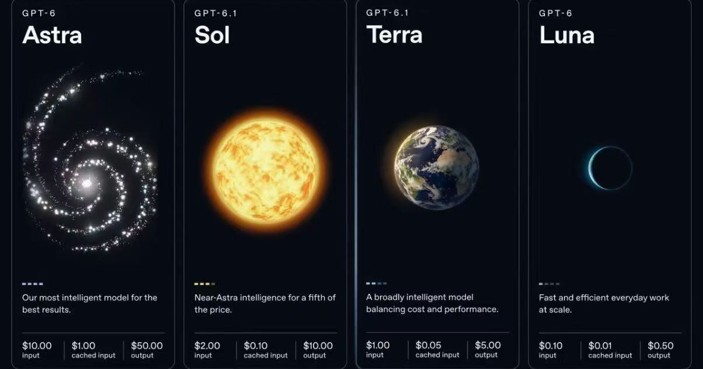

Luna / Terra / Sol / Astra 怎么选？GPT-6.1 家族定位一次看清
搜 luna terra sol、sol vs astra、sol release 时，信息往往散落在多篇官宣里。本文把 GPT-6 / GPT-6.1 家族四档——Luna、Terra、Sol、Astra——按定位、价位、适用场景串成一份选型笔记，方便做默认模型与分流策略。
开放范围、价目、是否出现在 Chat / Work / Codex / API，一律 以 ChatGPT / API 当日开放为准；不确定具体日历日时不编造上线日期。

1. 家族地图（从轻到强）
| 档位 | 常见型号示例 | 一句话定位 | API 名示例（以文档为准） |
|---|---|---|---|
| Luna | GPT-6 Luna | 最轻量、最便宜的日常与高吞吐 | gpt-6-luna |
| Terra | GPT-6.1 Terra | 看屏 / computer use / 日常 Agent 的性价比默认档 | gpt-6.1-terra |
| Sol | GPT-6.1 Sol（及 GPT-6 Sol） | 近旗舰的复杂工作与编码，价格明显低于 Astra | gpt-6.1-sol / gpt-6-sol |
| Astra | GPT-6 Astra | 旗舰：最强深度与对齐取向的兜底 | gpt-6-astra |
记忆口诀：Luna 跑量 → Terra 干活 → Sol 攻坚 → Astra 封顶。
2. 价目阶梯（公开口径）

标准 API 公开价摘要（每 1M tokens，可能调整，以官网为准）：
| 模型 | Input | Output | 选型含义 |
|---|---|---|---|
| GPT-6 Astra | ~$10 | ~$50 | 最贵；难题与高风险交付 |
| GPT-6.1 Sol | ~$2 | ~$10 | 公开口径：near-Astra，约 1/5 价 |
| GPT-6.1 Terra | ~$1 | ~$5 | 公开口径：相对 Astra 约 1/10 token 单价量级 |
| GPT-6 Luna | ~$0.10 | ~$0.50 | 海量简单请求、预过滤、草稿 |
Work / Codex 若按额度计量：同一套餐下，选更轻的档通常能多跑任务——具体仍看官方说明与你的用量报告。
3. 各档展开：什么时候用
Luna：跑量与分流
- 分类、抽取、短回复、简单改写、高 QPS 网关前置。
- 作为「贵模型之前的过滤器」：Luna 做完再决定是否升级到 Terra / Sol。
- 不指望它稳定完成长链路 computer use 或大重构。
Terra（重点关注 GPT-6.1 Terra）：默认工人
- 视觉理解 + 精确一点的电脑操作 + 更自然写作，是官方给 6.1 Terra 的主打组合。
- 适合：填表、对图操作、日常 Codex、多数业务 Agent。
- 相对 GPT-5.6 Terra：官方在 Agents’ Last Exam 等评测上给出明显提升主张——仍请按「公开主张」理解，并用自有任务验收。
- 复杂编码封顶时，官方也提示可改走 Sol / Astra。
Sol：近旗舰攻坚（含 sol release / 可用性说明）
- 公开定位接近 Astra 的专业工作、编码、computer use，但成本低一截。
- 可用性：Sol / 6.1 Sol 出现在 Chat、Work、Codex、API 的哪些表面，以 ChatGPT / API 当日开放为准；历史上存在「先在 Work / Codex / API，Chat 侧逐步放开」的情况，请勿把不确定的具体日历日写进生产配置假设。
- API 侧常见 ID：
gpt-6.1-sol（以文档列表为准）。 - 当你已经用 Terra「能做但不稳」时，Sol 往往是下一档，而不是直接跳 Astra。
Astra：封顶与兜底
- 最难推理、最高风险交付、需要旗舰对齐与深度的任务。
- 适合作为「升级路径的最后一跳」或关键路径强制指定，而不是全部流量的默认模型。
4. 三组高频对比
luna terra sol（怎么叠起来用）
请求进入
├─ 简单 / 可缓存 → Luna
├─ 常规 Agent / 看屏 / 日常编码 → Terra
└─ 失败重试或标记为 hard → Sol（仍失败 → Astra）
sol vs astra
| 问题 | 更稳妥的答案 |
|---|---|
| 能不能用 Sol 代替 Astra？ | 多数非极端任务可以先试；公开口径称 Sol 近 Astra、约 1/5 价 |
| 什么时候必须 Astra？ | 失败成本极高、内部规范要求旗舰、Sol 多次触顶 |
| 价格直觉 | Astra 最贵；Sol 是「性价比旗舰感」常见选择 |
sol release（上线与看到与否）
不要写死「某月某日一定全量可见」。实操核对清单：
- ChatGPT 模型选择器（Chat / Work 分开看）
- Codex 桌面或 Cloud 的模型列表
- API 控制台模型列表与文档定价页
- 客户端是否已更新到支持该模型的版本
任一项当日不可见，都先当「未对你的账号/区域开放」，而不是配置写错唯一可能。
5. 场景速查表
| 场景 | 优先 | 备选 |
|---|---|---|
| 客服草稿 / 字段抽取 / 高 QPS | Luna | Terra |
| 看屏填表、多步业务 Agent | Terra | Sol |
| 大重构、难 bug、长 Codex 任务 | Sol | Astra |
| 关键交付、最终质检 | Astra | Sol 人工复核 |
| 还在用 5.6 Terra | 先试 6.1 Terra | 不够再上 Sol |
6. 小结
- Luna / Terra / Sol / Astra 是一条清晰的成本—能力阶梯，而不是四个互斥「信仰」。
- 搜 luna terra sol 时，先定默认档（多数团队会落在 Terra），再用 Sol / Astra 做升级路径。
- sol vs astra：公开口径下 Sol 提供近旗舰体验与约 1/5 价；是否替下 Astra 用你的失败成本说话。
- sol release / 可见性：以 ChatGPT 与 API 当日开放为准，不编造具体日历日。
价目与评测主张均可能更新；上线前再核对官方文档与价目页。本文仅供选型整理。
附：本地对照环境（可选）
直连不稳或只想先摸手感时，可自行复制下列入口做对照（纯文本）：
网页对话对照：https://trygpt.asia/list/#/home
包月额度对照：https://momoai.asia/home
多模型 API 对照：https://tryallapi.com/
订阅路径对照：https://chongzhi.trygpt.asia/
与官方无关；价格以各页当日为准。